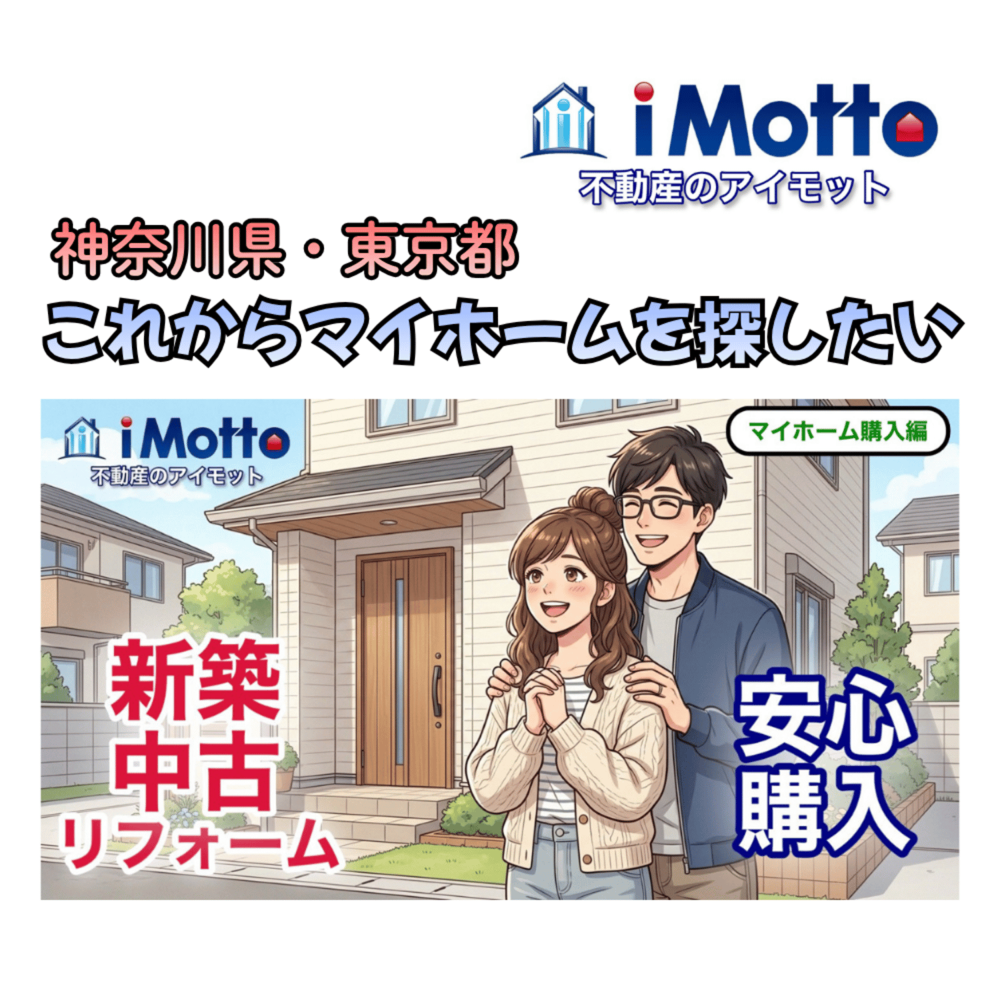
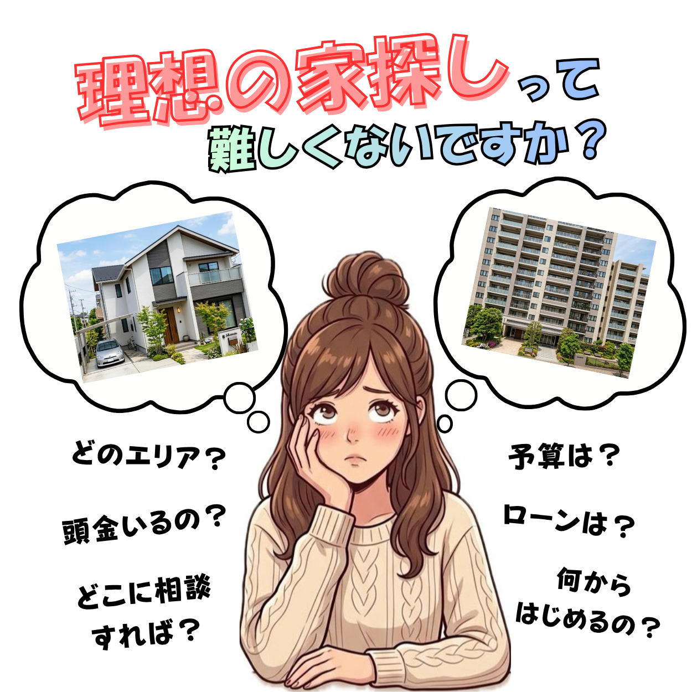
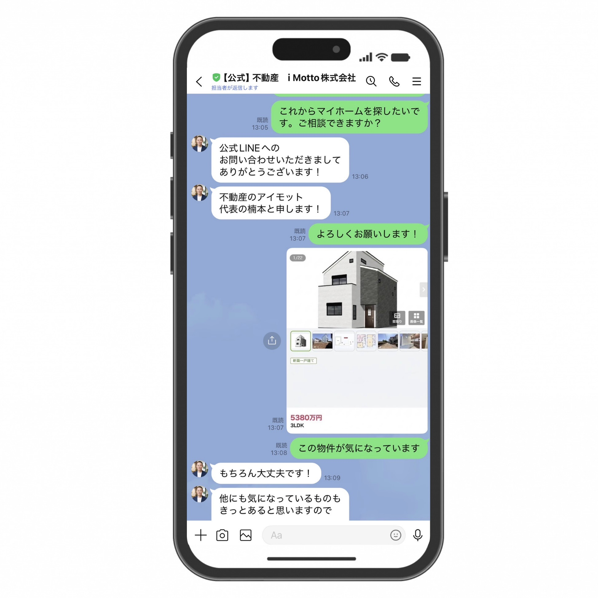
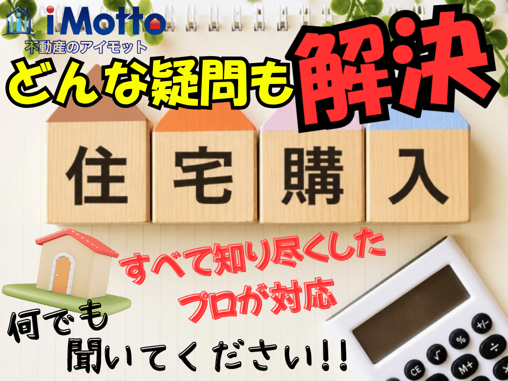

TYPE 01
気になる物件が
決まっている方
物件のURL、スクリーンショット、広告チラシなど、お手元にある情報を公式LINEからお送りください。複数の物件をまとめて送っていただいても構いません。
- 物件ページのURL
- 物件情報のスクリーンショット
- 広告チラシの写真
神奈川県・東京都のマイホーム購入
相模原市・厚木市でマイホーム購入を検討している方へ、アイモットが理想の家探しをサポートします。物件探しから住宅ローン、契約、引き渡しまで、楠本代表が直接対応します。

家探しの相談窓口を一本化気になる物件を、まとめてアイモットへ

物件探しには、エリアや予算だけでなく、住宅ローンや購入後の暮らしまで、考えることがたくさんあります。
気になる物件はいくつかあるかも…
SUUMO、LIFULL HOME'S、at homeなどで物件を探すと、気になる戸建てやマンションが複数見つかることがあります。
そのまま問い合わせると…
SUUMO、HOME'S、at homeなどで物件を探すと、気になる戸建てやマンションが複数見つかると思います。
掲載の不動産会社が異なるたびに問い合わせをおこない、同じ希望条件を毎回ゼロから説明するのは負担も大きいです。
会社（担当者）ごとにその物件をしつこく営業されるなど、自分にとって本当に選んでよい物件かどうか困惑してしまうことも。
ONE STOP SUPPORT
どんな仲介物件も
まとめてご紹介可能です。
アイモットでは、他社がネットに掲載している物件も含め、気になるすべての仲介物件をご紹介可能です。SUUMOやHOME'Sなどのポータルサイトや広告チラシ、現地販売会で見つけた物件もすべて対象となります。気になる物件があれば、アイモットへまとめてご相談ください。

WHY i MOTTO
当社では特定の物件を推す方針はありません。お客様がどの物件を選ばれても良いスタンスなので、常に同じ中立目線でご案内します。
経験豊富な業歴20年の代表楠本が直接担当するからこそできる、温かくきめ細かいサポート。しつこい営業は一切なく、あうんの呼吸で汲み取る代表に何でも言ってみてください。
お客様のご希望や状況を丁寧に汲み取り、プロのFPが整理します。将来的なライフプランに沿っているかを第一に考え、無理のない資金計画を一緒に立案します。ピッタリの住宅ローンの選び方も丁寧にサポートします。
START FROM WHERE YOU ARE
マイホーム探しの進み具合は、お客様によって異なります。どちらの段階でも、代表が直接対応します。
TYPE 01
物件のURL、スクリーンショット、広告チラシなど、お手元にある情報を公式LINEからお送りください。複数の物件をまとめて送っていただいても構いません。
TYPE 02
「これからマイホーム探しを始めたい」とお伝えください。希望するエリア、予算、間取り、通勤・通学、ご家族の暮らし方などを伺い、優先したい条件を整理します。
希望条件が曖昧な段階でも問題ありません。

物件がまだ決まっていない方も多いと思います。「これからマイホームを探したい」とお気軽にお送りください！
お問い合わせ方法 01
物件が決まっている方「この物件が気になっています」
URLやスクリーンショットを送るだけ。
まだ決まっていない方「これからマイホームを探したい」
このひと言からご相談いただけます。
ご相談内容を確認後、楠本代表が順番に対応します。
FREE CONSULTATION
一人で悩まず、まずは代表に直接お話しください。
MORE QUESTIONS
マイホーム購入では、物件を選ぶこと以外にも、住宅ローン、頭金、購入諸費用、将来の家計など、確認すべきことが数多くあります。

アイモットでは、楠本代表が物件と資金の両面からお悩みを整理します。購入できる金額だけで判断せず、購入後も安心して暮らせる計画を一緒に考えます。
TOTAL SUPPORT
画像をクリックすると拡大してご覧いただけます。
SUPPORT 01
物件を選ぶこと、買うことに意識を集中した結果、マイホームは購入できたものの、その後に後悔したり、将来の生活が心配になったりするご家庭も少なくありません。
マイホーム購入は、あくまで新しい暮らしを始めるための通過点です。購入後も安心して暮らし続けられるよう、物件だけでなく、住宅ローンや将来の家計まで考えて計画しましょう。
SUPPORT 02
アイモットでは、物件選びを始める前のお打ち合わせで、FPによる無料相談も実施します。
「金融機関から借りられる金額」と「無理なく返せる金額」は、必ずしも同じではありません。ご家庭ごとの将来のライフプランを見据え、無理なく返済できる予算の上限を決めてから、理想の家探しをスタートします。
SUPPORT 03
SUUMO、LIFULL HOME'S、at homeなどのポータルサイトや、ほかの不動産会社のチラシ・ホームページで気になった物件は、まとめてアイモットへお問い合わせください。
物件ごとに別々の不動産会社へ相談する必要はありません。経験豊富な宅地建物取引士が、特定の物件を無理に勧めることなく、中立的な立場からアドバイスします。お客様に合う理想の家を一緒に探します。
SUPPORT 04
物件の売買契約、住宅ローンに関する金融機関での手続き、司法書士による不動産登記、行政機関で取得する必要書類のご案内など、引き渡しまでに必要な手続きを一貫して同じ担当者がサポートします。
マイホーム購入は、新たな人生のスタートです。安心して新生活を始めていただけるよう、アイモットが最後までしっかりとお手伝いします。
FAQ
多くの仲介物件は、不動産会社のみが閲覧できる不動産流通情報システム「レインズ」に掲載されています。
アイモットでは、特定の物件を無理に勧めるようなノルマやしがらみはありません。お客様が気になっている物件や、ご希望に合う物件の中から、納得できる住まいを選んでいただくことを大切にしています。
そのため、ポータルサイトやほかの不動産会社のホームページで見つけた物件も、まとめてご相談いただけます。
※売主様や売主側の不動産会社の販売方針、商談状況などにより、ご紹介できない物件もあります。
はい、ご相談いただけます。
一般的には、「まず住宅ローンの事前審査を受けてみましょう」と進めることがありますが、準備をせずに申し込み、審査結果が否決となったケースも耳にします。
アイモットでは、現在の借入れ状況や過去の返済状況などを丁寧に伺い、住宅ローンの進め方を整理します。必要に応じて金融機関へ事前に相談しながら進めますので、まずは現在の状況をそのままお聞かせください。
※住宅ローンの審査結果を保証するものではありません。
どちらの方法も検討できます。
ただし、現在の住宅ローン残高や、新たに利用する住宅ローンの金額、現在の自宅の売却価格などによって、適した進め方は異なります。
アイモットでは、現在の自宅を先に売却する場合と、新居を先に購入する場合を比較し、お客様にとって負担の少ない方法をご提案します。金融機関の選定や、売却・購入を進めるタイミングも含めてご相談ください。
もちろんです。
聞こえのよいメリットだけでなく、物件の注意点や将来負担となる可能性がある内容もお伝えします。
楠本代表自身も、良い点と注意点の両方を理解したうえで判断したいと考えています。長期的に見てお客様のためにならないことはおこなわず、購入後に困る可能性がある内容は、むしろ事前にしっかりとご説明します。
中立的な立場で物件選びをサポートしますので、安心してご相談ください。
OUR VISION
かけがえのない家族と
帰りたくなる家がある
安心な未来を
CONTACT FORM
気になる物件が見つかっている方も、これから探し始めたい方も、お気軽にご相談ください。
フォームは後から実装予定です。